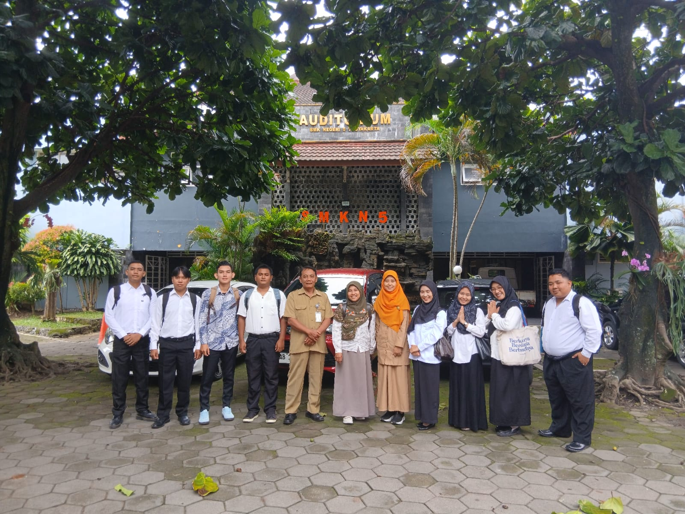
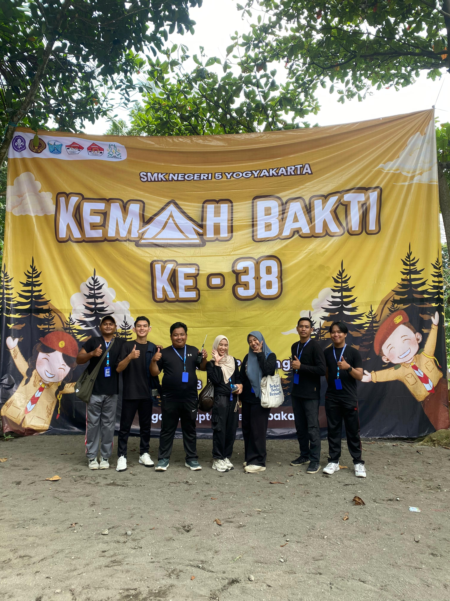
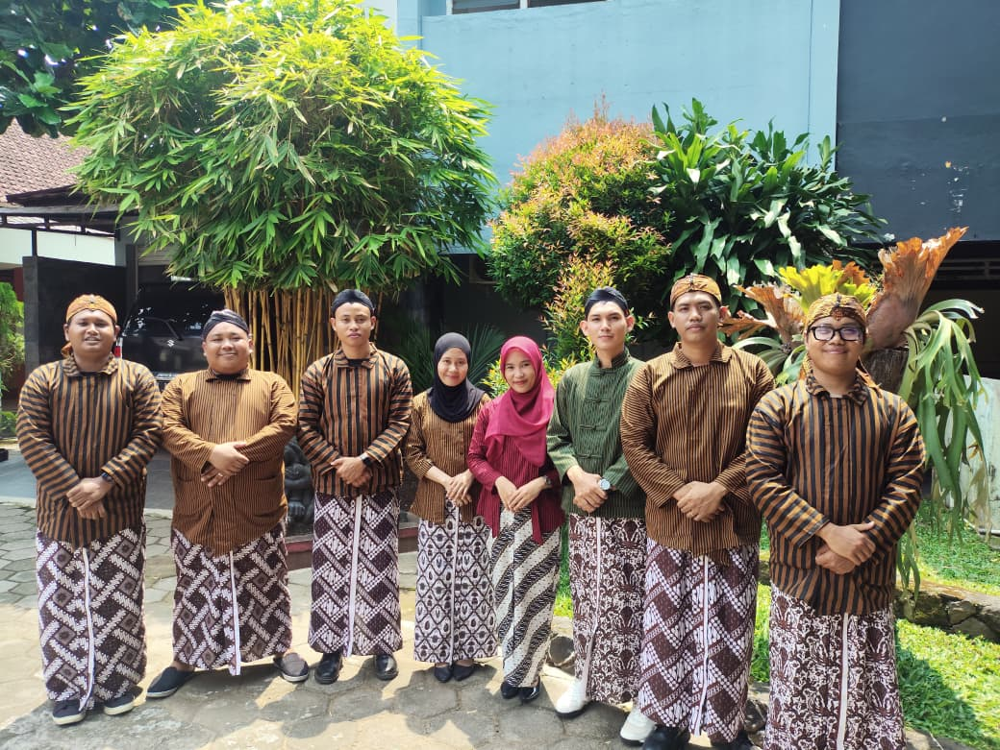
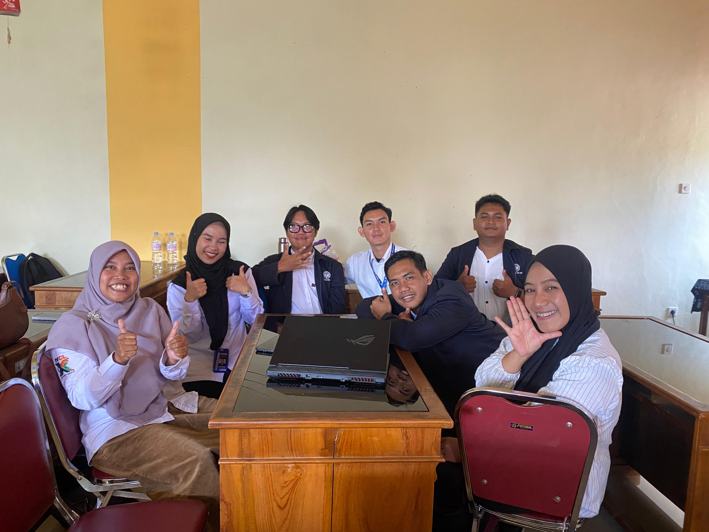

E-Portofolio 2 Semester 2
Dokumentasi komprehensif Praktik Pengalaman Lapangan (PPL) Mandiri Siklus 2, 3, dan 4 di SMK Negeri 5 Yogyakarta — Rencana Pelaksanaan Pembelajaran (RPP), video praktik mengajar, instrumen penilaian autentik, analisis reflektif mendalam, hingga rekam jejak kegiatan non-mengajar.
RPP Siklus 2 (Struktur Data & Analisis Data)
Rencana Pelaksanaan Pembelajaran Siklus 2 berbasis permainan logika dan eksplorasi data di SMKN 5 Yogyakarta.
Video Praktik Pembelajaran Siklus 2
Dokumentasi video pelaksanaan praktik mengajar materi struktur data di laboratorium komputer.
Instrumen Penilaian Siklus 2
Kumpulan instrumen evaluasi otentik: penilaian pelaksanaan mengajar, evaluasi RPP, dan LKPD peserta didik.
Analisis RPP Siklus 2
Refleksi rancangan instruksional materi struktur data dengan integrasi simulasi interaktif.
Desain Pembelajaran & Apersepsi Konkret
RPP Siklus 2 menghadirkan penyempurnaan signifikan dari Siklus 1 dengan merancang apersepsi berbasis aktivitas konkret bertajuk "Cari Data Saya!". Guru mengontekstualisasikan konsep abstrak struktur data (array dan indexing) ke dalam analogi pengorganisasian katalog bahan di bengkel kejuruan SMKN 5 Yogyakarta.
- Aktivasi Kognitif Cepat: Simulasi 15 menit awal berhasil mengeliminasi resistensi murid terhadap terminologi teknis informatika.
- Keterpaduan Diferensiasi: Peserta didik dengan daya tangkap beragam diberikan pilihan representasi data visual atau tabel matriks.
Evaluasi Manajemen Alokasi Waktu
Dibandingkan siklus sebelumnya, pembagian waktu pada RPP Siklus 2 berjalan jauh lebih presisi. Guru memprogramkan transisi yang terukur antara pemaparan materi, kerja mandiri pada LKPD, dan verifikasi silang antar-kelompok sehingga seluruh sintaksis terlaksana tuntas.
Analisis Video Praktik Siklus 2
Telaah interaksi kelas, gestur fasilitasi, dan peningkatan partisipasi aktif peserta didik.
Peningkatan Partisipasi & Interaksi Kelas
Rekaman praktik memperlihatkan suasana kelas yang lebih dinamis. Peserta didik menunjukkan keberanian bertanya dan saling mengoreksi saat menyusun barisan indeks data. Guru konsisten memberikan penguatan verbal positif (*positive reinforcement*) yang menjaga semangat belajar peserta didik.
Fasilitasi Kelompok Terarah
Guru terlihat efektif memandu kelompok kerja yang mengalami kebuntuan logika tanpa memotong alur berpikir mandiri siswa. Intervensi dilakukan lewat pertanyaan pemandu bertingkat, membimbing murid menemukan sendiri letak kekeliruan logika indeks data.
Analisis Media Pembelajaran Siklus 2
Kajian efektivitas alat peraga kartu indeks data dan media slide visual terstruktur.
Kombinasi Media Fisik & Digital
Siklus 2 memadukan kartu indeks fisik (*manipulative cards*) dengan visualisasi proyektor LCD. Media manipulatif terbukti mempercepat pemahaman murid kinestetik mengenai konsep antrian (*queue*) dan tumpukan (*stack*) sebelum diimplementasikan ke dalam kode komputer.
Dokumentasi Kegiatan Non-Mengajar
Partisipasi nyata mahasiswa PPL dalam mendukung tata kelola sekolah, kesiswaan, dan kolaborasi komunitas guru.

Penerjunan & Orientasi Satuan Pendidikan
Upacara serah terima dan koordinasi resmi bersama pimpinan SMKN 5 Yogyakarta guna menyelaraskan program PPL dengan agenda semester sekolah.

Pendampingan Perkemahan di Kaliurang
Keterlibatan aktif membimbing peserta didik kelas X dalam perkemahan pembinaan karakter di Buper Kaliurang untuk memupuk jiwa kemandirian dan gotong royong.

Piket Harian & Pembiasaan 3S di Gerbang
Melaksanakan piket harian menyambut kehadiran siswa di gerbang pagi, mengawasi kedisiplinan seragam, serta memperkuat budaya Senyum, Sapa, Salam.

Diskusi Refleksi & Kolaborasi Guru Pamong
Pertemuan mingguan evaluasi pengajaran bersama Guru Pamong dan rekan mahasiswa PPL guna meninjau hasil belajar dan merancang perbaikan siklus berikutnya.